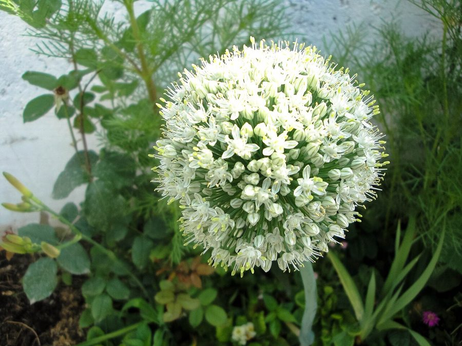

प्याज़Onion
Allium cepa · Amaryllidaceae · FLR-0144

- Scientific name
- Allium cepa L.
- Family
- Amaryllidaceae
- Hindi
- प्याज़
- Status here
- cultivated
- IUCN
- not evaluated
When to look कब देखें
Present all year.
Uses and possibilities उपयोग और संभावनाएँ
“Traditional medicine” means a documented traditional use, not a claim that it works. Nothing on this page is medical advice.
Drawn from the documented uses in the profile below, where each is labelled traditional, current or a research lead. All uses →
प्याज़ / Onion
Allium cepa L. — Amaryllidaceae
प्याज़ — भारत के हर रसोई घर में सबसे अधिक इस्तेमाल होने वाली सब्जी, और बस्ती जिले के किसानों के लिए महत्वपूर्ण आय का स्रोत। यह पौधा ज़मीन में एक गोल कंद (bulb) बनाता है, जिसकी परतें एक-एक करके छिलते हैं। प्याज़ का चेहरा ऊपर मिट्टी से बाहर निकलता है, कभी-कभी पत्तियाँ भी हरी रहती हैं। पूरे भारत में दो फसलें होती हैं — ठंड में (अक्टूबर-अप्रैल) और गर्मी में (जून-सितंबर)। कच्चा, उबला, तला, या सूखा — हर तरह से खाया जाता है। जलने वाली गंध इसकी सबसे पहचान है, जो आँखों में आँसू ला देती है।
Quick Identification त्वरित पहचान
| Feature | Description |
|---|---|
| Plant height | 0.3–0.6 m, erect, linear leaves from the base |
| Leaves | Long, linear, hollow, bluish-green, arising from basal sheath |
| Bulb | Underground, round or slightly flattened, with papery outer skin; color varies (white, red, yellow) |
| Stem | A short axis at the base of the bulb (basal disk) from which roots and leaves arise |
| Flowers | When bolting: a tall stem bearing a terminal umbel of small flowers (if allowed to flower) |
| Seeds | Small, black, triangular, borne in capsules after flowers are pollinated |
Field tip: Walk through an onion field in October–November. Look for rows of plants with linear, upright leaves. The bulb swells above the soil surface, showing a papery skin. Harvest occurs when the foliage yellows and dries.
Morphology आकारिकी
Biometrics (typical measurements for Indian bulbing varieties):
| Measurement | Range |
|---|---|
| Plant height | 0.3–0.6 m |
| Leaf length | 20–40 cm |
| Leaf width | 0.5–1.5 cm |
| Bulb diameter | 4–10 cm |
| Bulb weight | 50–300 g |
Root system: Fibrous roots arising from the basal disk, concentrated in the upper 15–20 cm of soil. Shallow-rooting; requires consistent soil moisture.
Leaves: Long, linear, hollow, bluish-green, arising in bundles from the basal sheath. The hollow structure (shared with all Allium) contains volatile sulfur compounds responsible for the characteristic odor and tear-inducing effect.
Bulb: Modified underground stem, composed of fleshy, edible leaf bases (scales) arranged in concentric rings around a central axis. The outer scales become papery (the onion skin), protecting the inner fleshy scales. Color of skin and flesh varies by variety: white, red/purple, or yellow.
Flowers (if allowed): A tall unbranched scape (leafless stem) bearing a terminal spherical umbel of small 6-petaled flowers. Colors are white, greenish, or tinged with purple. Flowers are protandrous (anthers mature before stigmas), promoting cross-pollination by insects. The plant is biennial or monocarpic when flowering is induced.
हिंदी: पत्ती खोखली, लंबी, हरी। कंद गोल, कई परतों वाला, सफेद, लाल, या पीला। गंध तीव्र।
Behaviour & Ecology व्यवहार और पारिस्थितिकी
A long-day plant from the Mediterranean and Central Asia, Allium cepa is now cultivated globally. In India, two seasonal crops are grown: Rabi (winter, October–May) and Kharif (monsoon, June–September). The plant requires cool nights and moderate day temperatures for good bulb formation. Photoperiod is critical: Indian varieties are adapted to different day lengths, with some varieties requiring longer days (summer) to bulb, others shorter days (winter).
The crop is shallow-rooted and demanding for water during bulb swelling. It is moderately hungry for nutrients, particularly nitrogen and potassium. The pungency (flavor and tear-inducing effect) of onions is due to sulfur compounds in the leaves and bulb; these compounds are enhanced under stress (drought, nitrogen deficiency).
The crop benefits from organic matter in soil; repeated cultivation without manure leads to soil depletion.
हिंदी: प्याज़ ठंडी रातें पसंद करता है। जल तो चाहिए, पर पानी भराव नहीं। गंध सल्फर से आती है।
Life Cycle / Phenology जीवन चक्र
Rabi crop (winter cycle; most common in eastern UP):
| Month | Event | हिंदी |
|---|---|---|
| Sep–Oct | Nursery raising from seed or planting sets | नर्सरी, बीज या कंद |
| Oct–Nov | Transplanting to main field; establishment | रोपाई |
| Nov–Jan | Vegetative growth; leaf development | पत्तियाँ बढ़ना |
| Jan–Mar | Bulb formation and swelling | कंद का विकास |
| Mar–Apr | Bulb maturation; foliage yellowing | पक जाना |
| Apr–May | Harvesting; field drying; storage | फसल काटना |
From transplanting to harvest: 120–150 days.
Kharif crop (monsoon cycle; secondary in Basti):
Sown June–July, harvested September–October. Requires adequate drainage due to monsoon rainfall.
हिंदी: सर्दी की फसल अक्टूबर में रोपते हैं, अप्रैल-मई में तोड़ते हैं। गर्मी की फसल जून में बोते हैं, सितंबर में तोड़ते हैं।
Cultivation Calendar कृषि कैलेंडर
| Stage | Month(s) |
|---|---|
| Nursery preparation and seed sowing (Rabi) | August–September |
| Nursery growth and seedling hardening | September–October |
| Field preparation and ploughing | September–October |
| Transplanting seedlings | October–November |
| Vegetative growth and irrigation | November–January |
| Bulb swelling and second irrigation | January–March |
| Foliage drying down and bulb maturation | March–April |
| Harvesting and field drying | April–May |
| Storage and marketing | June onwards |
Associated Species / Interactions संबंधित प्रजातियाँ
- Crop rotation: Often follows Wheat or Paddy.
- Companion crops: Sometimes intercropped with leafy greens or Potato.
- Market linkage: Major commercial crop with established supply chains to cities and markets.
Pests and Diseases कीट और रोग
- Thrips: Thrips tabaci; tiny insects that rasp leaves and cause silvering; more serious in dry conditions.
- Onion fly: Delia antiqua; maggots bore into bulbs causing rot.
- Pink root: Fungal disease (Phoma terrestris) causes root necrosis and stunting.
- Purple blotch: Alternaria porri; purple spots on leaves; worse in humid conditions.
- Downy mildew: In cool, wet weather.
Agricultural / Human Relevance कृषि प्रासंगिकता
Culinary use. Onions are used as a base ingredient in Indian cooking — fried, they form the foundation of curries. Raw, they are a condiment. Pickled onions are a preserved form. Onions are used in almost every savory dish, making them indispensable.
Flavor and health. Onions contain flavonoids and sulfur compounds that have been investigated for anti-inflammatory and antioxidant properties. The pungency comes from volatile compounds (thiosulfinate, diallyl disulfide) that have antimicrobial properties.
Livelihoods. Onion cultivation and trade are major economic activities. Farmers grow for market, traders transport bulk quantities to cities, and vendors sell in local bazaars and on streets. Prices fluctuate seasonally and annually, affecting farmers' incomes significantly.
Varieties cultivated in eastern UP: Aggregatum types (small bulbs, good keeping quality; e.g., Bhima Super, Bhima Safed), Granex types (larger, sweeter; suited to monsoon), and local landraces saved by farmers.
Storage and preservation. Onions are dried and stored in cool, well-ventilated structures, lasting several months. Some are processed into onion powder or pickled.
Traditional uses. In Ayurvedic medicine, onions are considered warming (ushna) and are used in decoctions for cough and cold. The juice is applied to burns.
हिंदी: प्याज़ हर खाने में जाता है। किसान इसे बेचकर पैसे कमाते हैं। अच्छे से सूखाकर रखा तो महीनों चलता है।
Expected Locally स्थानीय रूप से अपेक्षित
Not a field record. Written from published accounts for eastern Uttar Pradesh. No confirmed local sighting yet — if you have seen it, that is what the atlas needs.
अभी तक स्थानीय पुष्टि नहीं। यह विवरण प्रकाशित स्रोतों से है, किसी अवलोकन से नहीं।
Cultivated throughout Basti district as a major commercial crop. Fields are visible in all blocks during the Rabi season (October–May). Onions are sold in all local markets and are central to household food security and farmer livelihoods.
Distribution वितरण
Global range: Native to Central Asia and the Mediterranean; now cultivated globally.
In India: Cultivated in all states; major production in Maharashtra, Gujarat, and Uttar Pradesh.
In Uttar Pradesh: Widely cultivated; a major commercial vegetable crop.
In Basti district / eastern UP: Cultivated resident; significant commercial crop in agricultural blocks.
Research Questions शोध प्रश्न
Anyone can investigate these | कोई भी इन प्रश्नों की जाँच कर सकता है
- What varieties of onion are grown in your area, and which gives the best yield? / आपके इलाके में कौन-कौन सी किस्में उगती हैं? — Interview 10 farmers; note variety names, yields, and market prices.
- How many days from transplanting to harvesting? — Mark transplant date and harvest date; calculate days required.
- Do thrips appear in local fields? — During January–February, examine 10 plants; look for silver-damaged leaves.
- How long can harvested onions be stored without sprouting or rotting? — Store onions in different conditions (cool dry, warm dry, cool damp); record sprouting and rot time.
- Can onions grown in monsoon (Kharif) compete with winter onions in yield and quality? / गर्मी की प्याज़ सर्दी की प्याज़ जितनी अच्छी होती है?
Similar Species मिलती-जुलती प्रजातियाँ
| Species | How to tell apart | हिंदी |
|---|---|---|
| garlic (Allium sativum) | Segmented bulb (cloves); narrower, flattened leaves; stronger smell; harvested same season as onion | लहसुन — कलियों में विभाजित |
| Leek (Allium porrum) | Larger plant; white stem with sheathing leaves; no bulb formation; coarser leaves | हरा प्याज़ — तना सफेद, कोई कंद नहीं |
| Allium fistulosum (Spring onion / Scallion) | Smaller plants; no bulbing; multiple tillers; eaten whole | हरा प्याज़ बिना कंद के |
Field rule: A medium-height plant with long, hollow, linear leaves, with a round, papery-skinned bulb swelling above the soil surface is onion (Allium cepa).
Taxonomy & Classification वर्गीकरण
Original description. Carl Linnaeus described Allium cepa in 1753 in Species Plantarum. The genus name Allium is the classical Latin name for garlic. The specific name cepa is from the Latin cepe (onion).
Subspecies. Monotypic as a species, but with hundreds of cultivars differing in bulb size, color, pungency, and seasonal requirements.
Family and order placement. Amaryllidaceae, order Asparagales. The family includes lilies, amaryllis, and aloe. Allium contains about 1000 species, mostly ornamental or edible (onion, garlic, chive, leek).
Phylogenetic notes. Allium cepa is derived from wild Central Asian ancestors, likely Allium vavilovii. Domestication occurred in the Fertile Crescent and Central Asia over 5000 years ago.
IUCN status rationale. Not evaluated. As a domesticated crop, it is not assessed for extinction risk.
Photo Gallery फोटो गैलरी
Photos needed आवश्यक फोटो
- [ ] Onion plants in field showing leaves and developing bulbs
- [ ] Bulbs at harvest stage with papery skin visible
- [ ] Cross-section showing concentric layers (scales)
References संदर्भ
- Linnaeus, C. (1753). Species Plantarum. Laurentii Salvii, Stockholm, vol. 2, p. 432.
- Hooker, J.D. (1892). Flora of British India, vol. 6. L. Reeve & Co., London.
- Brewster, J.L. (2008). Onions and Other Vegetable Alliums. 2nd ed. CABI, Wallingford.
- Sharma, R., Singh, H. & Kumar, R. (2010). Onion Production and Marketing in Eastern India. Indian Journal of Horticulture, 67(4): 456–463.
- Singh, V. & Choudhury, B. (2012). Vegetables in India. Indian Council of Agricultural Research, New Delhi.
- GBIF Occurrence Data — Allium cepa, India (2015–2026).
Source file: species/flora/crops/onion.md